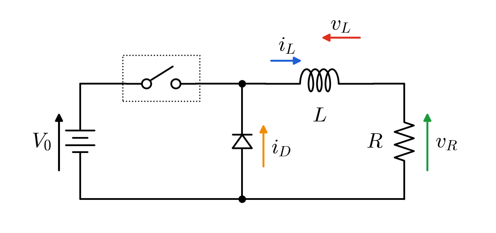
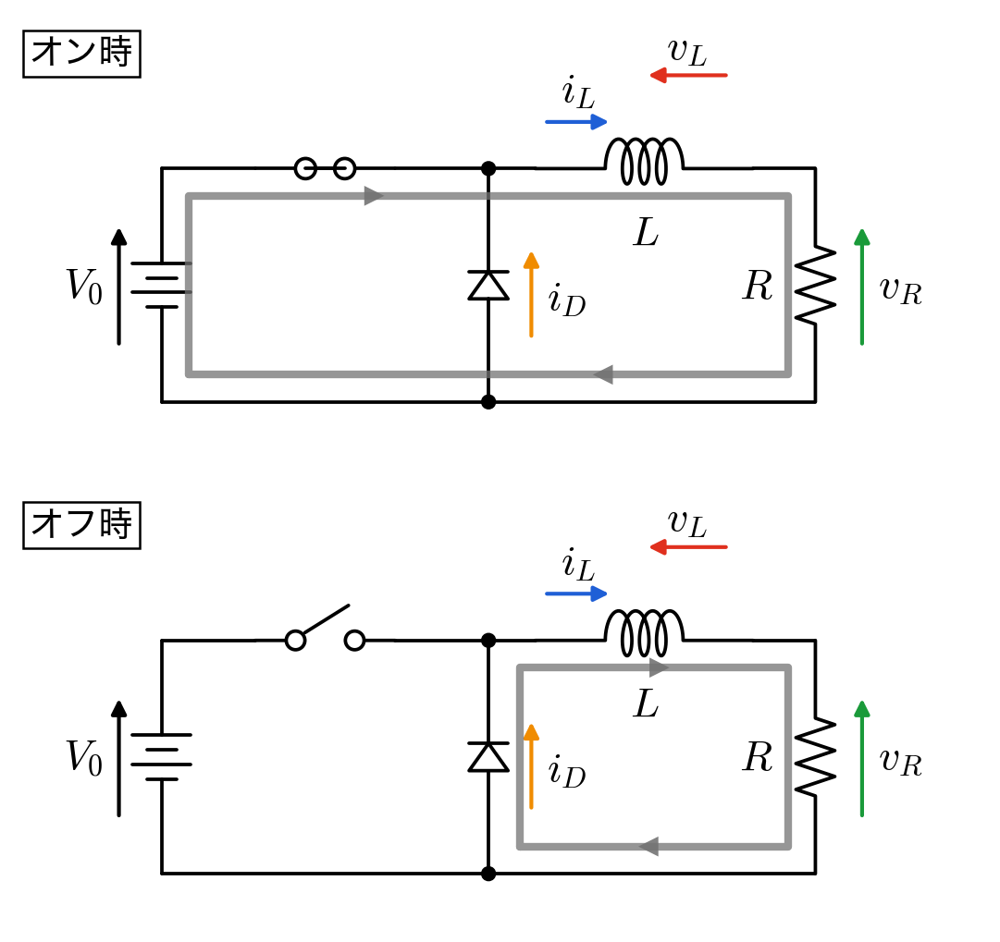
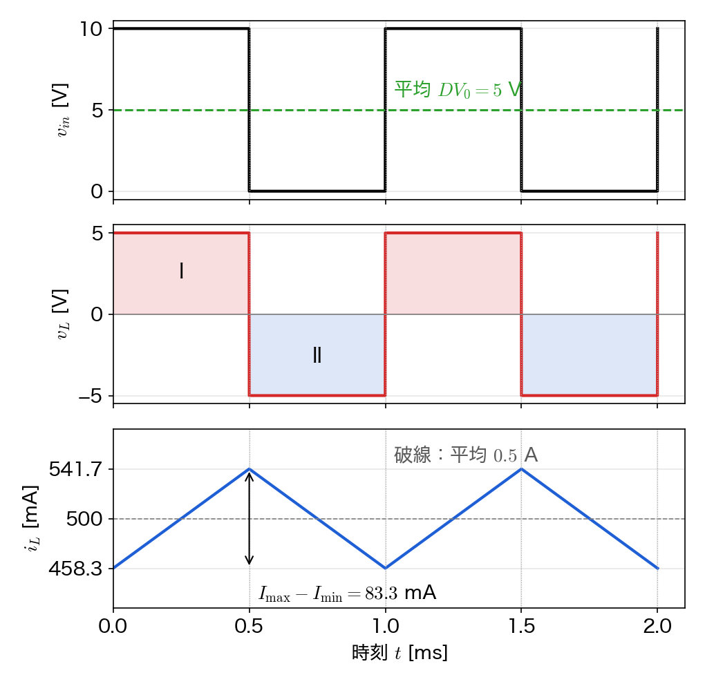
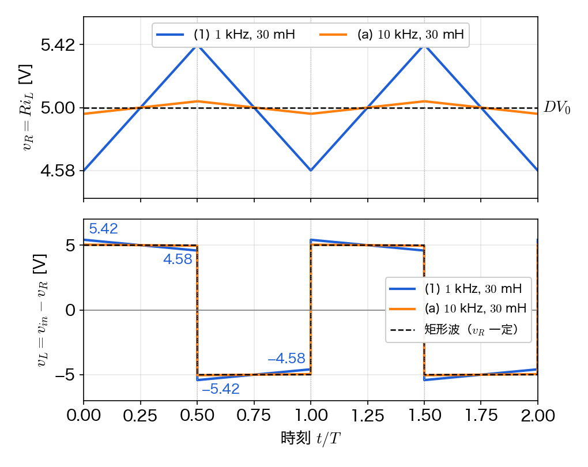
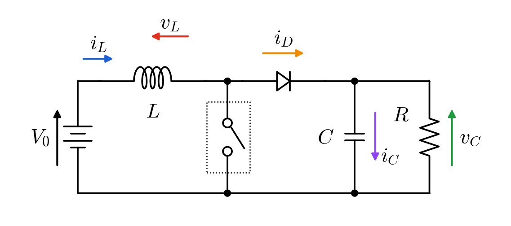
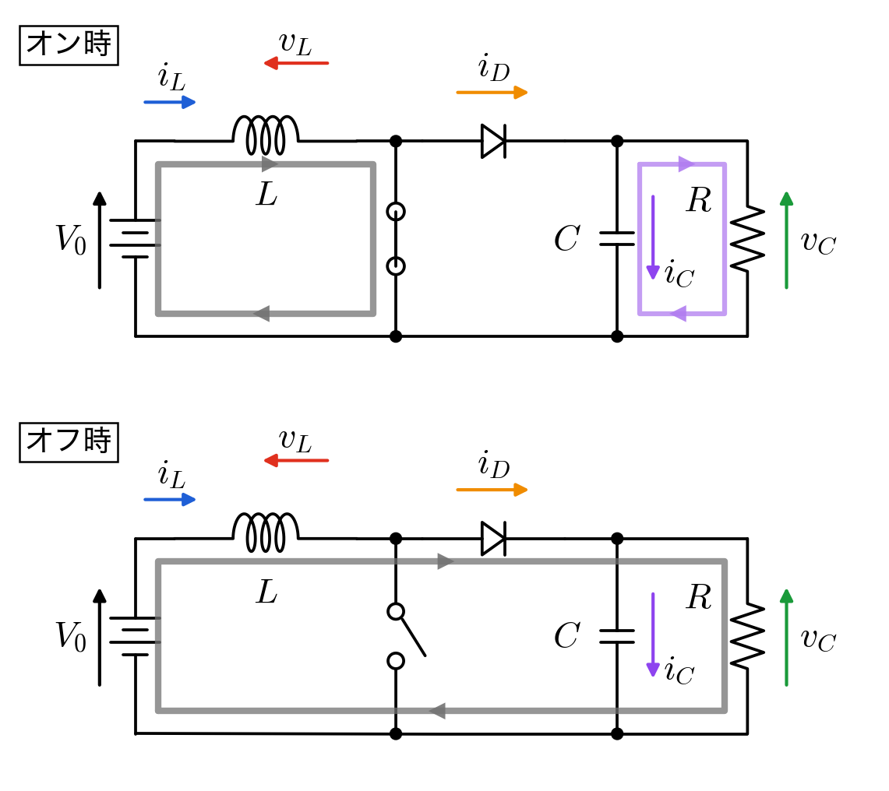
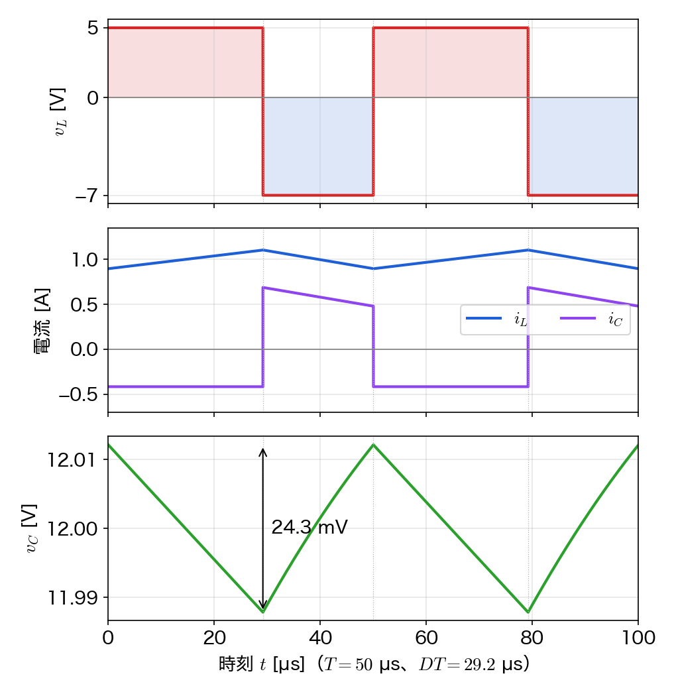
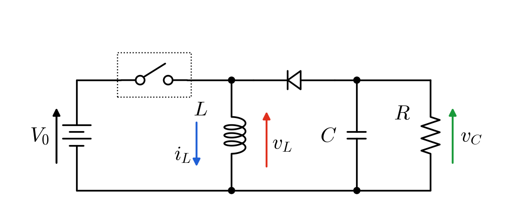
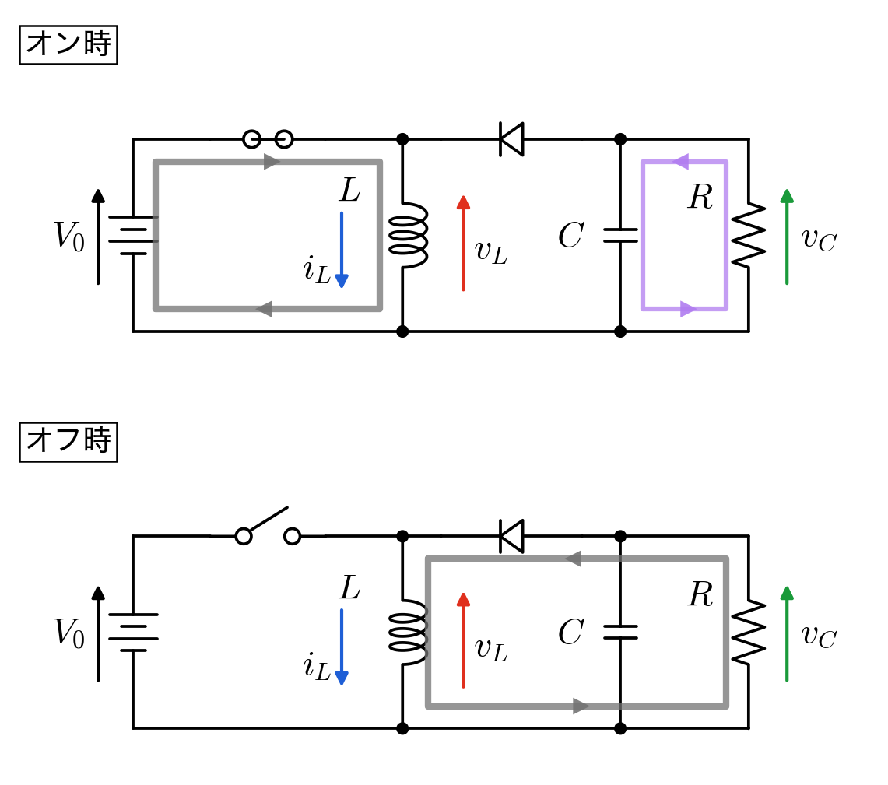
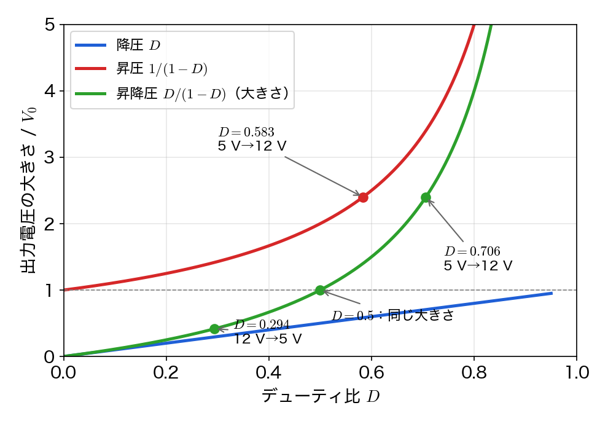

🗒️ 第5回は、降圧・昇圧・昇降圧の3つのチョッパー回路で「オンとオフの等価回路 → コイルの電圧 → 定常状態の条件（1周期の $v_L$ の積分が $0$）→ 出力電圧」というスライドの手順を、自分の手でたどる問題です。問題1は第4回の問題1（方形波の電圧源・コイル・直流電圧）がそのまま降圧チョッパーになっている、という話につながります。問題2はスライド p23 の電流の振動の式を導いて、$L$ や周波数を変えたときの比較と、p25 の「電流の振動を無視して、コイルの電圧を矩形波として計算した」という近似がどのくらい成り立っているかを確かめます。問題3の数値はスライドの昇圧チョッパー（$5\,[\mathrm{V}] \to 12\,[\mathrm{V}]$）と同じで、コンデンサの電圧の振動は第4回の問題2につながります。問題4は昇降圧チョッパーと、3つの回路の比べっこです。
下図の降圧チョッパー回路について考える。点線の枠の中は制御スイッチ（MOSFET や IGBT）で、周期$T$のうち$0\leq t\lt DT$でオン、$DT\leq t\lt T$でオフになる（$D$はデューティ比）。ダイオードは理想的なもの（オンのときの電圧は$0$）とする。$V_{0}=10\,[\mathrm{V}]$、$D=0.5$、スイッチング周波数$f_\mathrm{sw}=1\,[\mathrm{kHz}]$、$L=30\,[\mathrm{mH}]$、$R=10\,[\Omega]$とする。負荷の電圧$v_{R}$は、1周期のあいだほぼ一定とみなしてよい。以下の問いに答えよ。

スイッチがオンの時とオフの時のそれぞれについて、等価回路を描き、コイルの電流$i_{L}$が流れる経路を示せ。また、オンの時にダイオードに電流が流れない理由を説明せよ。
出発点：スイッチはオンなら導線、オフなら切れた線に置き換えます。ダイオードは、アノードのほうが電位が高ければ導線、カソードのほうが高ければ切れた線です。
オンの時：制御スイッチが導線になるので、ダイオードのカソード（上側）は電源の $+$ 側とつながって電位 $V_0$ になります。アノード（下側）は電源の $-$ 側で電位 $0$ です。カソードのほうが $V_0 = 10\,[\mathrm{V}]$ 高いので、ダイオードには逆向きの電圧がかかっていて電流は流れません（切れた線とみなせます）。電流は 電源 → スイッチ → $L$ → $R$ → 電源 と回ります。電源からコイルにエネルギーを蓄えている区間です。
オフの時：電源からの道が切れます。ただ、コイルの電流は急には変われません（第4回の問題4-3：コイルは電流源に近い素子）。$i_L$ は右向きに流れ続けようとするので、行き場として下の線からダイオードを下から上へ通る道ができ、ダイオードがオンになります。電流は $L$ → $R$ → 下の線 → ダイオード → $L$ と回ります。コイルが蓄えたエネルギーを抵抗に放出している区間です。

オンの時とオフの時のそれぞれについて、KVL からコイルにかかる電圧$v_{L}$を$V_{0}$、$v_{R}$を用いて表せ。
出発の式：KVL（ループを一周すると、電圧の上がり下がりの合計は $0$）。図の向きでは、$v_L$ はコイルの左側が高い向き、$v_R$ は抵抗の上側が高い向きです。
オンの時（1-1 の上のループ）：電源で $V_0$ 上がって、コイルで $v_L$、抵抗で $v_R$ 下がるので
$$V_0 - v_L - v_R = 0 \quad\Rightarrow\quad v_L = V_0 - v_R$$オフの時（1-1 の下のループ）：ダイオードはオンなので電圧は $0$ です。電源がループに入らないので
$$0 - v_L - v_R = 0 \quad\Rightarrow\quad v_L = -v_R$$数値を入れておくと（$v_R = 5\,[\mathrm{V}]$ は 1-3 で出します）、オンで $v_L = 10 - 5 = 5\,[\mathrm{V}]$、オフで $v_L = -5\,[\mathrm{V}]$ です。オフでコイルに負の電圧がかかるので、オンで増えた電流がオフで減ります。
定常状態の条件（1周期の$v_{L}$の積分が$0$）から、$v_{R}$を$D$と$V_{0}$で表し、その値を求めよ。また、コイルの電流$i_{L}$の平均値を求めよ。
出発の式：コイルの枝構成式 $v_L = L\,\dfrac{di_L}{dt}$。$L$ で割って 1周期（$0$ から $T$）積分すると、左辺は $i_L(T) - i_L(0)$ です。
$$i_L(T) - i_L(0) = \frac{1}{L}\int_0^{T} v_L\,dt$$定常状態は「1周期で電流が元に戻る」ことなので $i_L(T) = i_L(0)$、よって
$$\int_0^{T} v_L\,dt = 0$$積分をオンとオフに分けて、1-2 の $v_L$ を入れます。$v_R$ を一定とみなしているので、どちらの区間も $v_L$ は一定で、積分は「高さ × 幅」です。
$$\int_0^{DT} (V_0 - v_R)\,dt + \int_{DT}^{T} (-v_R)\,dt = 0$$ $$(V_0 - v_R)\,DT - v_R\,(T - DT) = 0$$オンの面積（下の図の I）とオフの面積（II）が等しい、という式です。スライドの $DT(V_0 - v_R) = (T - DT)v_R$ と同じです。かっこを外すと
$$DTV_0 - DTv_R - Tv_R + DTv_R = 0$$$-DTv_R$ と $+DTv_R$ が消えて $DTV_0 = Tv_R$。両辺を $T$ で割って、数値を入れると
$$v_R = DV_0 = 0.5 \times 10\,[\mathrm{V}] = 5\,[\mathrm{V}]$$コイルの電流は抵抗の電流と同じ（直列）なので、平均値はオームの法則で
$$\bar{i}_L = \frac{v_R}{R} = \frac{5\,[\mathrm{V}]}{10\,[\Omega]} = 0.5\,[\mathrm{A}]$$スライド p24 の「平均電圧 $= 5.0\,[\mathrm{V}]$」と合っています。
ダイオードの両端の電圧（カソード側が高い向き）を$v_{in}(t)$とする。$v_{in}(t)$の波形を$0\leq t\leq 2T$の範囲で描け。さらに、スイッチとダイオードの部分を$v_{in}(t)$という方形波の電圧源に置き換えると、第4回の演習問題1と同じ回路になることを説明せよ。
出発点：1-1 の等価回路です。
オンの時（$0 \le t < DT$）：カソードはスイッチを通して電源の $+$ 側、アノードは $-$ 側なので $v_{in} = V_0 = 10\,[\mathrm{V}]$。
オフの時（$DT \le t < T$）：ダイオードがオンで導線になっているので $v_{in} = 0$。
なので $v_{in}(t)$ は、$T = 1/f_\mathrm{sw} = 1\,[\mathrm{ms}]$ の周期で、最初の $DT = 0.5\,[\mathrm{ms}]$ が $10\,[\mathrm{V}]$、残りが $0$ の方形波です。

電源・スイッチ・ダイオードの部分は、コイルから見ると「$V_0$ と $0$ を行き来する電圧を出すもの」でしかありません。なので、この部分を方形波の電圧源 $v_{in}(t)$ に置き換えると、回路は $v_{in}(t)$ → $L$ → $R$ の直列になります。第4回の問題1は $v_{in}(t)$ → $L$ → 直流電圧 $V_1$ の直列で、負荷（$R$）を電圧源 $V_1$ とみなしたものでした。つまり同じ回路で、第4回の $V_1 = DV_0$ が、ここでの $v_R = DV_0$ です。スライドの p22〜p23（前回の復習）がちょうどこの置き換えです。
制御スイッチとダイオードの代わりに、2つのスイッチを交互にオンオフさせる場合を考える。2つのスイッチが同時にオンになった時と、同時にオフになった時に、それぞれ何が起こるかを、枝構成式を用いて説明せよ。
同時にオンの時：上のスイッチと下のスイッチ（ダイオードの代わり）を通って、電源の $+$ と $-$ が直接つながります。電源の両端の電圧はスイッチ2つの電圧の和なので、KVL は
$$V_0 = v_{\mathrm{sw1}} + v_{\mathrm{sw2}}$$です。ところが、オンのスイッチの電圧は（理想的には）$0$ なので右辺が $0$ になり、$V_0 = 10\,[\mathrm{V}]$ と食い違います。現実には、スイッチと配線の小さな抵抗 $r$ だけで電源を短絡したことになり、オームの法則（抵抗の枝構成式）から
$$I = \frac{V_0}{r} \;\to\; \infty \quad (r \to 0)$$の大電流が流れて、スイッチや電源を壊します（スライド p19 の $I = V/0$）。第4回の問題4で「電圧源にコンデンサを直接つなぐ」とパルス電流が流れたのと同じ種類の話で、電圧源どうしをぶつけています。
同時にオフの時：コイルの電流 $i_L$ の行き場がどこにもなくなり、$i_L$ はほぼ $0$ 時間で $0$ にされます。出発の式はコイルの枝構成式で、電流が $\Delta t$ の間に $i_L$ から $0$ になるとすると
$$v_L = L\,\frac{di_L}{dt} \approx L\,\frac{0 - i_L}{\Delta t} \;\to\; -\infty \quad (\Delta t \to 0)$$なので、コイルに非常に大きな電圧（サージ）が出て、それがオフのスイッチにかかって壊します。第4回の問題4(b) の「電流源にコイルをつなぐ」と同じで、コイルの電流を無理やり変えようとしています。
ダイオードを使うと、スイッチがオフになった瞬間にコイルの電流で自動的にオンになるので、同時にオフになることがありません。また、制御しなくてよいので同時にオンにすることもありません。降圧チョッパーの下側がダイオードになっているのはこのためです。
問題１の降圧チョッパー回路（$V_{0}=10\,[\mathrm{V}]$、$D=0.5$、$R=10\,[\Omega]$）で、コイルの電流の振動の大きさ$\Delta I = I_{\rm max}-I_{\rm min}$を考える。問題１と同じく、負荷の電圧$v_{R}$は1周期のあいだ一定（$v_{R}=DV_{0}$）とみなして計算する。以下の問いに答えよ。
オンの区間（$0\leq t\lt DT$）で、コイルの電流は$I_{\rm min}$から$I_{\rm max}$まで増える。問題１(2)で求めたオンの時の$v_{L}$と、コイルの枝構成式$v_{L}=L\,di_{L}/dt$から、$\Delta I$を$D$、$V_{0}$、$L$、$T$で表せ。また、$f_\mathrm{sw}=1\,[\mathrm{kHz}]$、$L=30\,[\mathrm{mH}]$のときの値を求めよ。
出発の式：コイルの枝構成式
$$v_L = L\,\frac{di_L}{dt}$$両辺をオンの区間（$0$ から $DT$）で積分します。右辺は $L$ × （電流の増えた分）で、電流は $I_\mathrm{min}$ から $I_\mathrm{max}$ まで増えるので
$$\int_0^{DT} v_L\,dt = L\,(I_\mathrm{max} - I_\mathrm{min})$$1-2 のオンの時の $v_L = V_0 - v_R$ を入れます。$v_R$ を一定とみなしているので $v_L$ も一定で、積分は「高さ × 幅」です。
$$(V_0 - v_R)\,DT = L\,\Delta I$$1-3 の $v_R = DV_0$ を入れると $V_0 - DV_0 = (1-D)V_0$ なので、$L$ で割って
$$\Delta I = \frac{DT(1-D)V_0}{L}$$スライド p23 の式、第4回の問題1-3 の式と同じです。数値は $T = 1/f_\mathrm{sw} = 1\times10^{-3}\,[\mathrm{s}]$ を入れて
$$\Delta I = \frac{0.5 \times 1\times10^{-3} \times (1 - 0.5) \times 10}{30\times10^{-3}} = \frac{2.5\times10^{-3}}{30\times10^{-3}} = 0.0833\,[\mathrm{A}] = 83.3\,[\mathrm{mA}]$$スライド p23 の $83.3\,[\mathrm{mA}]$ です。オフの区間で減る分も、$v_L = -v_R = -DV_0$ を $(1-D)T$ のあいだ積分して $DV_0(1-D)T/L$ で、同じ値になります（定常状態なので、増えた分と減った分が等しい）。
(1)と同じ回路で、(a) $f_\mathrm{sw}=10\,[\mathrm{kHz}]$、$L=30\,[\mathrm{mH}]$、(b) $f_\mathrm{sw}=1\,[\mathrm{kHz}]$、$L=300\,[\mathrm{mH}]$ とした。それぞれ$\Delta I$を求めよ。また、(a)と(b)が同じ値になる理由を、(1)の式から説明せよ。
出発の式：2-1 の式。$D(1-D)V_0 = 0.5 \times 0.5 \times 10 = 2.5\,[\mathrm{V}]$ は共通で、$T/L$ だけが変わります。
(a)：$T = \dfrac{1}{10\times10^{3}} = 0.1\,[\mathrm{ms}]$ なので
$$\Delta I = \frac{2.5 \times 0.1\times10^{-3}}{30\times10^{-3}} = 8.33\times10^{-3}\,[\mathrm{A}] = 8.33\,[\mathrm{mA}]$$(b)：$T = 1\,[\mathrm{ms}]$ なので
$$\Delta I = \frac{2.5 \times 1\times10^{-3}}{300\times10^{-3}} = 8.33\,[\mathrm{mA}]$$$\Delta I$ は $T/L$ に比例します。$T = 1/f_\mathrm{sw}$ なので、$\Delta I$ は $L$ と $f_\mathrm{sw}$ の積 $Lf_\mathrm{sw}$ に反比例します。(a) は $f_\mathrm{sw}$ を 10倍、(b) は $L$ を 10倍にしていて、どちらも $Lf_\mathrm{sw}$ が 10倍になるので、$\Delta I$ はどちらも (1) の $1/10$ になります。
中身は少し違っていて、(a) は電流の傾き $v_L/L$ は (1) と同じで、電圧をかける時間 $DT$ が $1/10$。(b) は時間は同じで、傾きが $1/10$ です。どちらも「傾き × 時間」が $1/10$ になります。
(1)の条件（$f_\mathrm{sw}=1\,[\mathrm{kHz}]$、$L=30\,[\mathrm{mH}]$）で、コイルの電流の平均値と、$I_{\rm max}$、$I_{\rm min}$を求めよ。また、$\Delta I$は平均値の何％か求めよ。
平均値：1-3 と同じで、コイルと抵抗は直列なので $\bar{i}_L = v_R/R = 5/10 = 0.5\,[\mathrm{A}] = 500\,[\mathrm{mA}]$。
$i_L$ はオンで直線的に増え、オフで直線的に減る三角波で、平均値のまわりに上下 $\Delta I/2$ ずつ振れます。
$$I_\mathrm{max} = \bar{i}_L + \frac{\Delta I}{2} = 500 + \frac{83.3}{2} = 500 + 41.7 = 541.7\,[\mathrm{mA}]$$ $$I_\mathrm{min} = \bar{i}_L - \frac{\Delta I}{2} = 500 - 41.7 = 458.3\,[\mathrm{mA}]$$ $$\frac{\Delta I}{\bar{i}_L} = \frac{83.3\,[\mathrm{mA}]}{500\,[\mathrm{mA}]} = 0.167 = 16.7\,[\%]$$1-4 の図の $i_L$ が、この $458.3$〜$541.7\,[\mathrm{mA}]$ の三角波です。
(1)の式は、$v_{R}$を一定とみなし、コイルの電圧$v_{L}$を矩形波として計算したものである。ところが実際には$v_{R}=Ri_{L}$なので、$i_{L}$が振動すると$v_{R}$も振動する。(3)の$I_{\rm max}$と$I_{\rm min}$から$v_{R}$の最大値と最小値を求め、オンの区間の始めと終わりで$v_{L}$がいくらになるかを求めよ。それを矩形波とみなした値（(1)で使った$v_{L}$）と比べよ。さらに、(2)の(a)の条件ではどうなるかを求め、この近似がよく成り立つためには$L$と$f_\mathrm{sw}$をどうすれば良いか答えよ。
出発の式：抵抗の枝構成式（オームの法則）$v_R = R\,i_L$ と、1-2 のオンの時の KVL $v_L = V_0 - v_R$。
(1) の条件：2-3 の値を入れて
$$v_{R,\mathrm{max}} = R\,I_\mathrm{max} = 10 \times 0.5417 = 5.417\,[\mathrm{V}]$$ $$v_{R,\mathrm{min}} = R\,I_\mathrm{min} = 10 \times 0.4583 = 4.583\,[\mathrm{V}]$$オンの区間の始め（$t = 0$）は電流が一番小さい $I_\mathrm{min}$ のとき、終わり（$t = DT$）は一番大きい $I_\mathrm{max}$ のときなので
$$\text{始め}：v_L = V_0 - v_{R,\mathrm{min}} = 10 - 4.583 = 5.417\,[\mathrm{V}]$$ $$\text{終わり}：v_L = V_0 - v_{R,\mathrm{max}} = 10 - 5.417 = 4.583\,[\mathrm{V}]$$矩形波とみなした値は $v_L = V_0 - DV_0 = 5\,[\mathrm{V}]$ で一定でした。実際は $5.417\,[\mathrm{V}]$ から $4.583\,[\mathrm{V}]$ まで傾いていて、矩形波から $\pm 0.417\,[\mathrm{V}]$、つまり $\pm 8.3\,[\%]$ ずれています。オフの区間も同じで、$v_L = -v_R$ は $-5.417\,[\mathrm{V}]$ から $-4.583\,[\mathrm{V}]$ まで変わります。スライド p25 の「電流の振動を無視して計算した」「コイルの電圧が矩形波として計算」は、このずれを無視した、ということです。
(a) の条件：2-2 の $\Delta I = 8.33\,[\mathrm{mA}]$ から、$I_\mathrm{max} = 500 + 4.17 = 504.17\,[\mathrm{mA}]$、$I_\mathrm{min} = 495.83\,[\mathrm{mA}]$ なので
$$v_{R,\mathrm{max}} = 5.042\,[\mathrm{V}], \qquad v_{R,\mathrm{min}} = 4.958\,[\mathrm{V}]$$オンの区間の $v_L$ は、始め $10 - 4.958 = 5.042\,[\mathrm{V}]$、終わり $10 - 5.042 = 4.958\,[\mathrm{V}]$ です。
矩形波の $5\,[\mathrm{V}]$ からのずれは $\pm 0.042\,[\mathrm{V}]$（$\pm 0.83\,[\%]$）で、(1) の $1/10$ です。ほぼ矩形波とみなせます。

ずれの大きさを式で書くと、$v_R$ の振れ $R\,\Delta I$ と $DV_0$ の比は
$$\frac{R\,\Delta I}{DV_0} = \frac{\Delta I}{\bar{i}_L} = \frac{R\,(1-D)}{L f_\mathrm{sw}}$$（2-1 の式と $\bar{i}_L = DV_0/R$ から）。$L f_\mathrm{sw}$ が大きいほど、電流の振動が小さくなって $v_R$ がほぼ一定になり、$v_L$ が矩形波に近づきます。つまり、この近似がよく成り立つのは、$L$ を大きくするか、$f_\mathrm{sw}$ を高くしたとき（電流の振動 $\Delta I$ が平均値に比べて十分小さいとき）です。
なお、オンの区間の $v_L$ は $5.417\,[\mathrm{V}]$ から $4.583\,[\mathrm{V}]$ まで（ほぼ）直線的に変わるので、区間の平均はやはり $5\,[\mathrm{V}]$ です。$\Delta I$ はオンの区間の $v_L$ の積分（面積）で決まるので、(1) の条件でも、式の $83.3\,[\mathrm{mA}]$ はそれほど外れません。ずれが大きくなるのは、電流の振動が平均値と同じくらいまで大きくなったときです。
下図の昇圧チョッパー回路について考える。制御スイッチは$0\leq t\lt DT$でオン、$DT\leq t\lt T$でオフになる。ダイオードは理想的なものとし、コンデンサの電圧$v_{C}$は1周期のあいだほぼ一定とみなしてよい。$V_{0}=5\,[\mathrm{V}]$、$f_\mathrm{sw}=20\,[\mathrm{kHz}]$、$L=700\,[\mu\mathrm{H}]$、$C=500\,[\mu\mathrm{F}]$、$R=28.8\,[\Omega]$とする。以下の問いに答えよ。

スイッチがオンの時とオフの時のそれぞれについて、等価回路を描き、$i_{L}$が流れる経路を示せ。また、オンの時にダイオードに電流が流れない理由と、オンの時に負荷$R$に電流を流しているのは何かを説明せよ。
オンの時：スイッチが導線になって、コイルの右端が下の線（電位 $0$）につながります。電流は 電源 → $L$ → スイッチ → 電源 と回り、電源からコイルにエネルギーを蓄えます。このときダイオードのアノードは電位 $0$、カソードはコンデンサの上側で電位 $v_C\ (> 0)$ なので、逆向きの電圧 $v_C$ がかかって電流は流れません。電源・コイルの側と、コンデンサ・負荷の側が切り離されるので、負荷 $R$ にはコンデンサが電流を流しています（コンデンサは放電して $v_C$ が少し下がる）。
オフの時：スイッチが切れても、コイルの電流は急には変われないので、$i_L$ はダイオードを通ってコンデンサと負荷に流れ込みます。電流は 電源 → $L$ → ダイオード → $C$ と $R$ → 電源 と回ります。コイルからコンデンサにエネルギーを放出している区間で、コンデンサはここで充電されます。

オンの時とオフの時のそれぞれについて、コイルにかかる電圧$v_{L}$を$V_{0}$、$v_{C}$を用いて表せ。
出発の式：KVL。$v_L$ はコイルの左側が高い向きです。
オンの時（電源 → $L$ → スイッチ のループ。スイッチの電圧は $0$）：
$$V_0 - v_L = 0 \quad\Rightarrow\quad v_L = V_0$$オフの時（電源 → $L$ → ダイオード → $C$ のループ。ダイオードの電圧は $0$）：
$$V_0 - v_L - v_C = 0 \quad\Rightarrow\quad v_L = V_0 - v_C$$3-3 で $v_C > V_0$ になるので、オフの $v_L$ は負です。数値は、オンで $5\,[\mathrm{V}]$、オフで $5 - 12 = -7\,[\mathrm{V}]$（3-4 の $v_C = 12\,[\mathrm{V}]$ のとき）。
定常状態の条件から、$v_{C}=\dfrac{1}{1-D}V_{0}$となることを導け。また、$v_{C}$が$V_{0}$より大きくなる理由を、$D$のとりうる範囲から説明せよ。
出発の式：問題1と同じで、コイルの枝構成式を 1周期積分して、定常状態 $i_L(T) = i_L(0)$ から
$$\int_0^{T} v_L\,dt = 0$$3-2 の $v_L$ を入れます。$v_C$ を一定とみなしているので、どちらの区間も高さ × 幅です。
$$V_0\,DT + (V_0 - v_C)(T - DT) = 0$$オンの面積（I）とオフの面積（II）が等しい、というスライド p34 の $DTV_0 = (T - DT)(v_C - V_0)$ と同じ式です。かっこを外すと
$$DTV_0 + TV_0 - DTV_0 - v_C(T - DT) = 0$$$DTV_0$ が消えて
$$TV_0 = v_C\,(1-D)\,T \quad\Rightarrow\quad v_C = \frac{1}{1-D}\,V_0$$$D$ は $0 \le D < 1$ なので $0 < 1 - D \le 1$ で、その逆数 $\dfrac{1}{1-D}$ は $1$ 以上です。よって $v_C \ge V_0$ で、$D > 0$ なら必ず昇圧になります。
回路で言うと、オフの区間でコイルの電流が減るには $v_L = V_0 - v_C$ が負、つまり $v_C > V_0$ でなければいけません。オフの区間では、電源の電圧 $V_0$ にコイルの電圧が上乗せされてコンデンサにかかる、と見ることもできます。
$v_{C}=12\,[\mathrm{V}]$にしたい。$D$を求めよ。また、負荷で消費される電力を求め、入力と出力の電力が等しいとしてコイルの電流の平均値を求めよ。さらに、コイルの電流の振動の大きさ$\Delta I = I_{\rm max}-I_{\rm min}$を求め、平均値と比べよ。
$D$：3-3 の式を $D$ について解きます。
$$1 - D = \frac{V_0}{v_C} \quad\Rightarrow\quad D = 1 - \frac{V_0}{v_C} = 1 - \frac{5}{12} = \frac{7}{12} = 0.583$$スライド p35〜p36 の $D = 0.583$ です。
負荷の電力：出発の式は $P = v_C^2/R$（抵抗の電力）。
$$P = \frac{v_C^{2}}{R} = \frac{12^{2}}{28.8} = \frac{144}{28.8} = 5\,[\mathrm{W}]$$コイルの電流の平均値：電源とコイルは直列なので、電源から出る電流はいつでも $i_L$ です。入力の電力は $V_0\,\bar{i}_L$ で、これが出力の $5\,[\mathrm{W}]$ と等しいので
$$V_0\,\bar{i}_L = P \quad\Rightarrow\quad \bar{i}_L = \frac{P}{V_0} = \frac{5\,[\mathrm{W}]}{5\,[\mathrm{V}]} = 1\,[\mathrm{A}]$$負荷の電流は $v_C/R = 12/28.8 = 0.417\,[\mathrm{A}]$ なので、入力側のほうが電流が大きく（電圧が低いぶん）なっています。確かめとして、ダイオードに電流が流れるのはオフの $(1-D)$ の割合なので、ダイオードの平均電流は $\bar{i}_L(1-D) = 1 \times 5/12 = 0.417\,[\mathrm{A}]$ で負荷の電流と一致します（コンデンサの平均電流は定常状態で $0$）。
振動の大きさ：問題2と同じく、枝構成式をオンの区間（$0$ から $DT$）で積分して、$v_L = V_0$ を入れます。
$$T = \frac{1}{20\times10^{3}} = 50\,[\mu\mathrm{s}], \qquad DT = \frac{7}{12} \times 50 = 29.2\,[\mu\mathrm{s}]$$ $$\Delta I = \frac{1}{L}\int_0^{DT} V_0\,dt = \frac{V_0\,DT}{L} = \frac{5 \times 29.17\times10^{-6}}{700\times10^{-6}} = 0.208\,[\mathrm{A}]$$オフの区間で減る分も $(v_C - V_0)(1-D)T/L = 7 \times 20.83\times10^{-6}/(700\times10^{-6}) = 0.208\,[\mathrm{A}]$ で同じです。平均 $1\,[\mathrm{A}]$ に対して $\Delta I/\bar{i}_L = 0.208 = 20.8\,[\%]$ で、$i_L$ は $0.896$〜$1.104\,[\mathrm{A}]$ を行き来します。

スライド p36 の波形で $v_C$ が $12\,[\mathrm{V}]$ になっていないのは、スライドの注記のとおり、ダイオードのオンのときの電圧（約 $0.7\,[\mathrm{V}]$）を考慮しているからです。この問題は理想ダイオードなので $12\,[\mathrm{V}]$ です。
オンの区間では、コンデンサだけが負荷に電流を流している。負荷の電流を$v_{C}/R$で一定とみなして、コンデンサの電圧の振動の大きさ$\Delta v_{C}$を求めよ。
出発の式：コンデンサの枝構成式 $i_C = C\,\dfrac{dv_C}{dt}$（第4回の問題2と同じ）。オンの区間はダイオードが切れているので、コンデンサ・負荷の部分で KCL を書くと、コンデンサから出た電流がそのまま負荷に流れます。図の $i_C$（下向き）で書くと
$$i_C + \frac{v_C}{R} = 0 \quad\Rightarrow\quad i_C = -\frac{v_C}{R} = -\frac{12}{28.8} = -0.417\,[\mathrm{A}]$$枝構成式を $C$ で割ってオンの区間（$0$ から $DT$）で積分すると、$v_C$ の変化（減る分）は
$$v_C(DT) - v_C(0) = \frac{1}{C}\int_0^{DT} i_C\,dt = -\frac{v_C}{R}\,\frac{DT}{C}$$大きさを取って、数値を入れると
$$\Delta v_C = \frac{v_C}{R}\,\frac{DT}{C} = 0.417 \times \frac{29.17\times10^{-6}}{500\times10^{-6}} = 0.417 \times 0.0583 = 0.0243\,[\mathrm{V}] = 24.3\,[\mathrm{mV}]$$$12\,[\mathrm{V}]$ に対して $0.2\,[\%]$ で、ほぼ一定とみなしてよかったことがわかります。オフの区間ではコンデンサに $i_L - v_C/R$（平均 $1 - 0.417 = 0.583\,[\mathrm{A}]$）が流れ込み、$0.583 \times 20.83\times10^{-6}/(500\times10^{-6}) = 24.3\,[\mathrm{mV}]$ 戻るので、1周期で元に戻ります。
下図の昇降圧チョッパー回路について考える。制御スイッチは$0\leq t\lt DT$でオン、$DT\leq t\lt T$でオフになる。ダイオードは理想的なものとし、コンデンサの電圧$v_{C}$（向きは図の矢印）は1周期のあいだほぼ一定とみなしてよい。以下の問いに答えよ。

スイッチがオンの時とオフの時のそれぞれについて、等価回路を描き、$i_{L}$が流れる経路を示せ。また、それぞれの区間でコイルにかかる電圧$v_{L}$を$V_{0}$、$v_{C}$を用いて表せ。
オンの時：電流は 電源 → スイッチ → $L$（上から下）→ 電源 と回り、電源からコイルにエネルギーを蓄えます。コイルの上の節点は電位 $V_0$ で、ダイオードのカソードがここにつながっています。アノードはコンデンサの上側で、4-2 で見るように $v_C < 0$ なので電位は負です。カソードのほうが高いので、ダイオードには電流が流れません。負荷にはコンデンサが電流を流しています。
オフの時：コイルの電流は下向きに流れ続けようとするので、$L$ → 下の線 → $C$ と $R$ を下から上へ → ダイオード（右から左）→ $L$ と回ります。コイルからコンデンサにエネルギーを放出します。電源はこのループに入っていません。

出発の式：KVL。$v_L$ はコイルの上側が高い向き、$v_C$ はコンデンサの上側が高い向きです。
オンの時（電源 → スイッチ → $L$ のループ）：
$$V_0 - v_L = 0 \quad\Rightarrow\quad v_L = V_0$$オフの時（$L$ → $C$ → ダイオード のループ。ダイオードの電圧は $0$ なので、コイルの上とコンデンサの上は同じ電位）：
$$v_L - v_C = 0 \quad\Rightarrow\quad v_L = v_C$$定常状態の条件から、$v_{C}$を$D$と$V_{0}$で表せ。また、$v_{C}$が負になる（入力と出力の符号が反転する）理由を、オフの時にコンデンサに流れ込む電流の向きから説明せよ。
出発の式：これまでと同じく $\displaystyle\int_0^{T} v_L\,dt = 0$。4-1 の $v_L$ を入れて
$$V_0\,DT + v_C\,(T - DT) = 0$$スライド p44 の $DTV_0 = (T - DT)(-v_C)$ と同じ式です。$v_C$ について解くと
$$v_C\,(1-D)\,T = -DTV_0 \quad\Rightarrow\quad v_C = -\frac{D}{1-D}\,V_0$$$V_0 > 0$、$0 < D < 1$ なので $v_C < 0$ です。
理由：オフの時、コイルの電流は（オンの時と同じ）下向きに流れ続けます。その電流は下の線を通って、コンデンサに下から入り、上から出ていきます。なので、コンデンサの下の極板に正の電荷がたまり、上の極板が負になります。図の $v_C$ は上が高い向きなので、$v_C$ は負です。オンの時もオフの時もコイルの電流の向きは同じで、オフの時にそれを「下から」コンデンサに送り込む形になっているので、出力の極性が入力と逆になります。
入力$12\,[\mathrm{V}]$から大きさ$5\,[\mathrm{V}]$の出力を作る$D$と、入力$5\,[\mathrm{V}]$から大きさ$12\,[\mathrm{V}]$の出力を作る$D$をそれぞれ求めよ。また、問題３の昇圧チョッパーで$5\,[\mathrm{V}]$から$12\,[\mathrm{V}]$を作るときの$D$と比べよ。
出発の式：4-2 の大きさ $|v_C| = \dfrac{D}{1-D}V_0$ を $D$ について解きます。両辺に $(1-D)$ をかけて
$$|v_C|(1-D) = DV_0 \quad\Rightarrow\quad |v_C| = D(V_0 + |v_C|) \quad\Rightarrow\quad D = \frac{|v_C|}{V_0 + |v_C|}$$ $$12\,[\mathrm{V}] \to 5\,[\mathrm{V}]：D = \frac{5}{12 + 5} = \frac{5}{17} = 0.294$$ $$5\,[\mathrm{V}] \to 12\,[\mathrm{V}]：D = \frac{12}{5 + 12} = \frac{12}{17} = 0.706$$スライド p45・p46 の $D = 0.2941$、$0.7059$ です。同じ回路で、$D$ を変えるだけで降圧にも昇圧にもなります。
昇圧チョッパーで $5\,[\mathrm{V}] \to 12\,[\mathrm{V}]$ は 3-4 の $D = 7/12 = 0.583$ でした。昇降圧のほうが $D$ を大きくしないといけません。式で比べると
$$\frac{D}{1-D} = \frac{1}{1-D} - 1$$なので、同じ $D$ なら昇降圧の出力の大きさは、昇圧の出力より $V_0$ だけ小さくなります。回路で言うと、昇圧チョッパーはオフの時に「電源の $V_0$ ＋ コイルの電圧」が出力にかかりますが、昇降圧チョッパーはオフの時に電源がループから外れていて、コイルの電圧だけが出力にかかるからです。
降圧・昇圧・昇降圧チョッパーの出力電圧の大きさと$V_{0}$の比を、$0\leq D\lt 1$の範囲で1つのグラフに描け。また、昇降圧チョッパーの比が、降圧チョッパーの比と昇圧チョッパーの比の積になっていることを確かめよ。
出発の式：問題1・3・4 で出した 3つの式です。
$$\text{降圧}：\frac{v_R}{V_0} = D, \qquad \text{昇圧}：\frac{v_C}{V_0} = \frac{1}{1-D}, \qquad \text{昇降圧}：\frac{|v_C|}{V_0} = \frac{D}{1-D}$$
降圧は $D$ に比例する直線で $0$ から $1$ まで、昇圧は $D = 0$ で $1$ から始まって $D \to 1$ で大きくなります。昇降圧は $D = 0$ で $0$ から始まり、$D = 0.5$ で $\dfrac{0.5}{0.5} = 1$（入力と同じ大きさ）、$D > 0.5$ で $1$ を越えて昇圧になります。
積を確かめると
$$D \times \frac{1}{1-D} = \frac{D}{1-D}$$で、昇降圧の比になっています。降圧チョッパーの後ろに昇圧チョッパーをつないだのと同じ比、ということです。
なお、式の上では昇圧と昇降圧は $D \to 1$ でいくらでも大きくなりますが、実際にはコイルやスイッチの抵抗の損失があるので、そうはなりません。